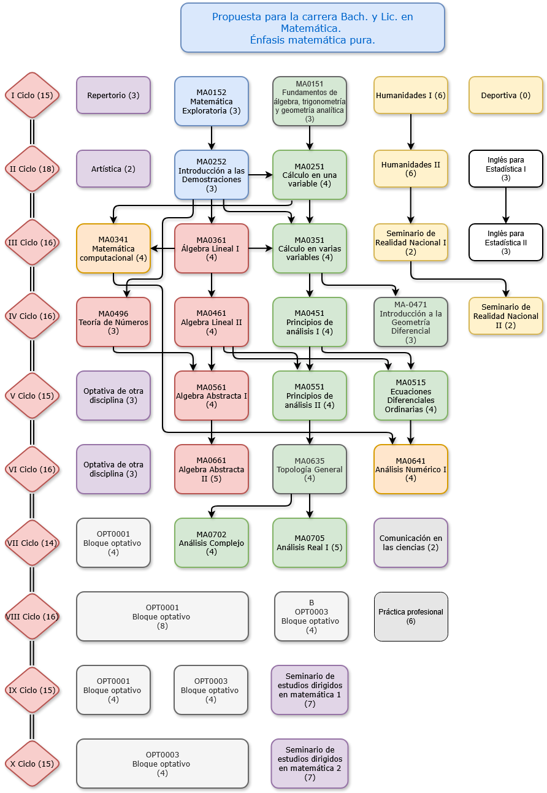

Propuesta de malla curricular
Carrera de matemática
Énfasis en matemática pura

No se pudieron cargar
pura.json, aplicada.json o
contenidos_por_curso.json (los navegadores suelen bloquear
file://).
En esta carpeta ejecute, por ejemplo:
python -m http.server 8080
y abra http://localhost:8080/index.html